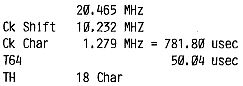

80-Bus Journal |
April/Mai/Juni 1984 · Ausgabe 2 |
Um auch mit dem Nascom1 64 Zeichen pro Zeile darstellen zu können, müssen folgende Änderungen vorgenommen werden:
Quarz austauschen gegen 20,465 MHz
C3 gegen 47 pF austauschen.
Ersetzen der ICs 1, 2, 3, 4, 7, 10 durch Steckanschlüsse.
Dann kann die nachfolgende Schaltung eingesetzt werden.
Die abgedruckten Schaubilder geben Aufschluß über das Timing und die Bestückung zur günstigen Leitungsführung. Hier die entsprechenden neuen Frequenzen:
| Seite 46 von 52 |
|---|